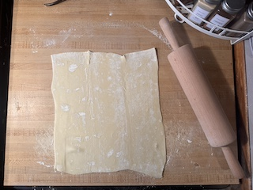

This recipe is something I hold dearly in my heart.
I learned how to make this recipe when i first moved out on my own.
It has become a special recipe to me, and I am glad to be sharing it with others to enjoy.
It is so simple, and tastes delicious.
Materials Needed
Sheet pan
Wax or parchement paper
Medium to large pan
Rolling pin
Ingredients
5 Apples (Granny and honey crisp, but may use any you would like)
1 large tsp Cinnamon
4 tbs Butter (unsalted)
3 tsp Corn startch
1/2 cup brown sugar (dark or light)
1/4 cup granulated sugar
1/4 tsp salt
For egg wash:
1 egg, 1-2 tablespoon water
Can add any other additions. Such as cranberries, raisins, orange zest, nuts, etc.
Recipe
(Puff pastry needs to be set out of freezer. It still needs to be cold but soft enough to shape. )
Begin by preheating your oven to 400F.
Start with making your filling. Peel and cube all of your apples into a large bowl. Make the apple cube slices to your liking!
Put your 4 tbs butter into the pan, turn heat to medium high. 5-7 on numbered oven.
Once butter is melted, transfer your apples to the pan.
Immediately toss in your 1/2 cup brown sugar, 1/4 cup granulatred sugar, 1/4 tsp salt, and 1 tsp cinnamon.
mix, and add your cornstarch.
This is a quick process! as the apples start to release their juices immediately remove from heat. If left on the heat too long the jucie will be runny and the apples will be too soft.
As the filling cools, prepare your work space. Take flour on a large clean surface and sprinkle it over this space.
Take your puff pastry sheet and lay it flat on top of your flowered surface.

Roll it out with your rolling pin. stretching the pastry. Thickness depends on the person, but I make mine decently thin.
Take the puff pastry and lay it on top of a wax/parchament paper lined sheet pan. For the braid I will be skipping this skip and doing it directly on the cutting board.
Now put your filling on top of the pastry. Try to keep it in the middle of the pastry, as it will move and ooze while baking in the oven, and to leave space to attatch the braided pieces to the sides.
Now, we are going to braid it!
(it is optional to do this, you may also lay your second pastry in the package as a top piece, or stretch your original dough to fold over however you like. I also recommend just making large slits on top if you do not want to braid.
-- Video Tutorial for braid --
As shown in the video, make sure to brush the edges of your pastry (or pastry pieces) and pinch or use a fork to seal the edges. Brush the egg wash on top of your pastry as well
Transfer into oven, cook for 10-20 minutes. Make icing while you wait.
ICING INSTRUCTIONS
Electric mixer recommended.
Put your butter into a mixing bowl.
Add powdered sugar.
Add vanilla extract
Add heavy cream as needed.
Once taken out, you can add your icing now or individually. if icing turns out with powdered sugar clumps, putting it into the microwave for 10-15 seconds and stirring can help break them up.
Enjoy your delicious dessert!